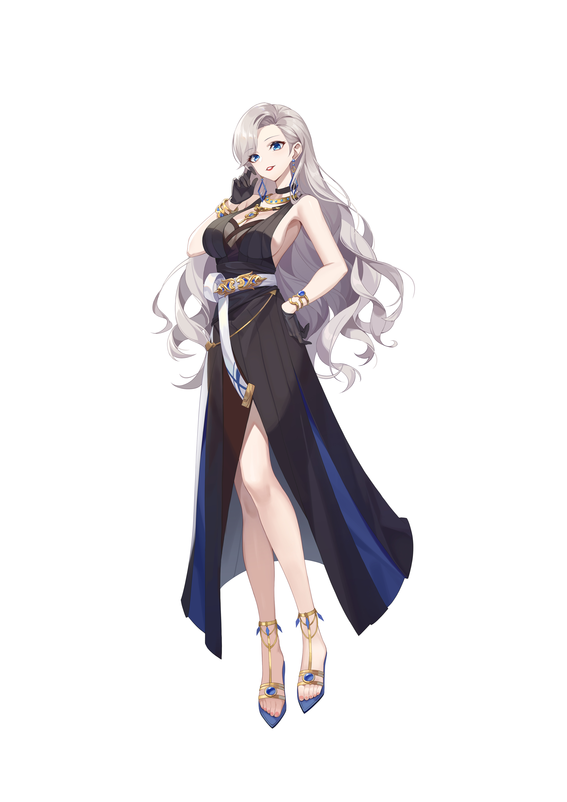

简介
A-SOUL组合中的御姐角色，充满贵妇气质，擅长有关奢侈品与节日风俗的科普，在抖音的短视频里面经常向队员进行各类科普（你知道吗？你知道吗？你知道吗？），具有浓厚的电台风格。在初设中是A-SOUL五人里面最后一个赶回来的海外留学生。（乃琳酱~）
单人直播以深夜电台和杂谈为主，涉及希腊神话，刑法等，后面的单播还进行过游戏回（真正的gamer）与歌舞回。
团播时一般担任MC，控场能力极强，会主动开车，讲荤段子，坏女人担当。
单播中玩过守望先锋和奥日与黑暗森林，向晚Gamer担当地位的有力竞争者
|
|
|
 |
简介A-SOUL组合中的御姐角色，充满贵妇气质，擅长有关奢侈品与节日风俗的科普，在抖音的短视频里面经常向队员进行各类科普（你知道吗？你知道吗？你知道吗？），具有浓厚的电台风格。在初设中是A-SOUL五人里面最后一个赶回来的海外留学生。（乃琳酱~） 单人直播以深夜电台和杂谈为主，涉及希腊神话，刑法等，后面的单播还进行过游戏回（真正的gamer）与歌舞回。 团播时一般担任MC，控场能力极强，会主动开车，讲荤段子，坏女人担当。 单播中玩过守望先锋和奥日与黑暗森林，向晚Gamer担当地位的有力竞争者 |
|